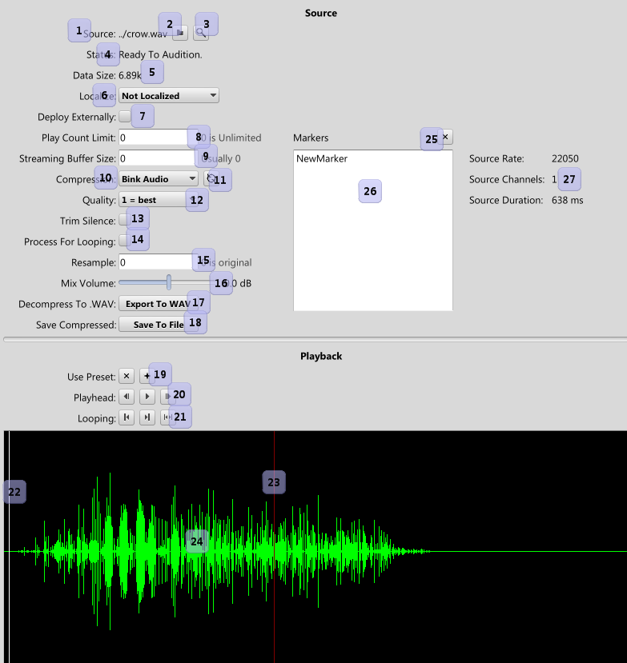

|
Sound Reference |
| Related: | Text | Navigation |
Sound Assets control the source sound files and how they are compressed.

Compressed Files As Input
Miles allows you to bring in your own compressed files for use as an asset, but the file format has to be one Miles can read. When you do this, Miles will not process the source file at all.
Sound Status
Sounds are compressed in the background, meaning you can continue to work while all of your sounds are compressing. The current status of the compression is reported here. When is says "Ready to Audition", the sound has completed all necessary steps and is ready to be played. Any errors will be reported here as well.
External Deployment
By default, sounds are packed in to the sound bank when deployed for use in a game. By checking this, you are asserting that you are responsible for telling Miles where to get this sound. See the "eventexternal" sample app. Sound Designers: never check this unless your programmer tells you to.
Markers
Markers are stored positions within a sound. They can be referenced via Start Sound: Sound Offsets And Loop Points. An important thing to note is they are data offsets, not time offsets, so they will *not* be valid if you change compression. For instance, if you set a marker when the sound is a .WAV file, then compress to Bink Audio, the marker will likely exist off the end of the sound data, and as such isn't very useful.
Loop Processing
Looping with compressed sound is fraught with peril. Compressors work in frames, which leads to a couple of issues for looping. Among those issues is the length of the sound might not be a multiple of a frame size, so you'll get a small bit of silence at the end that prevents perfect looping. Second, the frames tend to "bleed" between each other, causing pops when looping.
When you mark this setting, Miles will resample the length of the sound to a multiple of the frame size, and try to compensate for the compressor latencies and blending. This is not an exact science, but if you are having trouble looping an entire file and you really want the sound compressed, this may help.
 Environment Reference Environment Reference |
 Miles Studio Reference Miles Studio Reference |
 Bank Reference Bank Reference |

|
Miles Sound System 9.3b
E-mail miles3@radgametools.com for technical support. Copyright © 1991-2012 by RAD Game Tools, Inc. All Rights Reserved. |

|